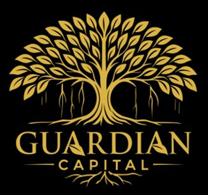

~₹2,050 Cr
Revenue (FY26)

A complete walk through one of India's top-three branded bathware makers — the company behind millions of WCs, wash basins, taps and shower fittings — how a business that manufactures barely half of what it sells still earns a fortress balance sheet, why a gas pipeline into a small Gujarat town is its most underrated asset, and why the interesting number here is not revenue but the margin it has to rebuild.
What you're looking at, before we go deep.
Cera Sanitaryware Limited makes the fittings a bathroom is built around — sanitaryware (WCs, wash basins, cisterns), faucetware (taps, showers, mixers), tiles, and a growing range of wellness products (bathtubs, shower enclosures, kitchen sinks). It is one of India's top-three branded bathware companies, alongside Hindware (HSIL) and Parryware (Roca), and it sells almost entirely under a single, trusted name: CERA, laddered up into CERA Luxe and the luxury Senator line. The manufacturing heart is a large complex at Kadi in north Gujarat — the first sanitaryware plant in India to be fired on natural gas.
Three facts frame everything:
Cera is the label on the bathroom, not always the foundry behind it. It designs and brands WCs, taps and tiles, makes the trickiest sanitaryware itself at a gas-fired plant in Gujarat, buys in the rest, and pushes the whole basket through a vast dealer network and a chain of showrooms. That asset-light tilt is why it throws off cash and carries almost no debt — a fifth of its market value is literally money in the bank. The catch is that its FY26 profit went backwards even as sales rose, because the bits it does buy in (brass faucets, especially) got dearer and it spent hard on advertising. So the market is paying a rich, brand-company multiple for a company whose immediate job is to prove the margin dip was a pothole, not a new road.
No jargon needed — just the product basket, the buyer, and the tide the whole category rides.
Everything in a modern bathroom that isn't a wall or a pipe is, roughly, Cera's addressable market. The business splits into four product families with meaningfully different economics, and it sits on top of one big structural tailwind: Indian households are steadily trading up from unbranded, local fittings to branded ones. To follow the company you only need to hold four categories and one shift in your head.
| Category | What it is (and why it matters here) |
|---|---|
| Sanitaryware | The ceramic core — WCs (toilets), wash basins, cisterns. Cera's founding business and biggest single segment (~48% of revenue). Made largely in-house at Kadi; this is where the brand's quality reputation and gas-fired cost edge live. |
| Faucetware | Taps, mixers, showers, health faucets — mostly brass and metal. Now nearly as large as sanitaryware (~40%). Higher raw-material (brass/zinc) exposure, and a big chunk is outsourced. The segment that hurt margins most in FY26. |
| Tiles | Floor and wall tiles (~10%). Largely sourced — from JV plants, the Morbi cluster and imports — rather than made by Cera. A thinner-margin, "complete the bathroom" line that rounds out the dealer's shelf. |
| Wellness & allied | Bathtubs, shower panels & enclosures, kitchen sinks, mirrors (~2%, growing). Small today, but the premium, aspirational end that lifts the brand's ceiling and average ticket. |
India's bathroom is formalising. A large share of the country's WCs, taps and tiles are still bought as commodity, unbranded product from local kilns and traders. As incomes rise, homes get renovated, and the government's decade-long sanitation push (over 100 million household toilets built) normalises the idea of a "proper" bathroom, buyers move up to branded fittings that carry a warranty, a showroom experience and a name they trust. That migration from unorganised to branded is the slow tide under Cera, Hindware and Parryware alike — it expands the branded pie faster than the overall construction market grows.
Bathware feels like an FMCG-style branded consumer story, and in its economics — brand, distribution, premiumisation — it partly is. But its demand is tied to bricks and mortar: home construction, renovation cycles and real-estate sentiment. When property is booming and homes are being built and done up, the branded-fittings market races; when housing stalls, so does offtake, no matter how strong the brand. That dual nature is the key to reading Cera. It has the margins and cash generation of a consumer company, but the cyclicality of a building-materials one — and the second half of that sentence is what the market periodically forgets.
The most important structural fact about the company — and the one most people get wrong.
Ask a casual observer what Cera is and they will say "a sanitaryware manufacturer." The truer answer is that Cera is a brand and distribution machine that manufactures selectively. It makes what is hard to make and buys what is easy to buy — and the ratio of the two is a deliberate strategy, not an accident. Understanding this make-or-buy split explains the balance sheet, the margins and the risks all at once.
The rationale is coldly commercial. A designer WC or a large one-piece rimless unit is hard to mould, glaze and fire consistently — so Cera makes it at Kadi, where its own kilns, gas and quality control protect both the margin and the brand. A basic health-faucet or a standard floor tile is a near-commodity that a specialised third party (or a Morbi tile plant) can turn out more cheaply than Cera could justify a new plant for — so Cera buys it, stamps its brand and warranty on it, and sells it through the same dealer. The plant capital it saves stays as cash; the flexibility lets it flex supply up in a good season without building a factory it might not need in a bad one.
The outsourced model is what makes Cera capital-light, cash-rich and quick on its feet — it can add a product line without a plant, and it ties up far less money in fixed assets than a full-integration rival. But the same design has a soft flank: the bits it buys in expose it to input-cost and supplier risk it doesn't fully control. When brass prices jumped in FY26, Cera's outsourced-faucet cost rose with them and the margin took the hit. When the Morbi tile-and-fittings cluster stumbled — gas shortages, operational disruption — Cera had to quietly pull some high-selling SKUs back in-house to protect supply. So the elegant asset-light story carries a permanent tax: you own the brand, but you rent part of your cost base, and the rent can spike.
The most under-appreciated asset on the books — and it is specific to this company in this town.
Sanitaryware is, at bottom, fired clay. Moulded ceramic bodies are baked in kilns at well over 1,000°C, and the fuel that fires those kilns is one of the largest controllable costs in the whole operation. Which fuel you burn, at what price, and whether it keeps flowing, is therefore not a footnote — it is a structural determinant of who makes money in Indian ceramics. And on that specific axis, Cera holds an edge that traces back to a decision made in the late 1970s.
When Vikram Somany set up the Kadi plant, he made it the first sanitaryware unit in India to fire on natural gas — a cleaner, more controllable fuel that also gives the glaze a better finish. Decades on, that early move has hardened into a real advantage: Cera runs Kadi on a long-term natural-gas allocation, drawing from GAIL and Sabarmati Gas at contracted terms. Its kilns keep firing on piped, allocated gas while a big chunk of the unorganised competition — the sprawling Morbi ceramic cluster a few hours away — depends on more expensive, more volatile spot gas and LNG.
Here is the non-transferable heart of Cera's cost story. A gas-price spike is normally read as a pure negative for a ceramics maker — costs up, margins down. For Cera it is double-edged in its favour. Yes, its own fuel bill rises. But the same spike falls far harder on the thousands of spot-gas Morbi units that supply the unorganised, unbranded end of the market and even part of Cera's own outsourced basket. When their kilns throttle or go dark, supply tightens, unbranded product gets scarcer and dearer, and the branded, still-firing player picks up share and pricing power. The exact event that looks like a margin threat — expensive gas — is also the event that thins the herd Cera competes against. A rival with the same product but spot gas cannot claim that. That is what a pipeline allocation into one Gujarat town is really worth: not just a cheaper unit cost in calm times, but resilience precisely when the sector is on fire.
The edge is not unlimited. A severe, broad gas shock hits Cera too — in mid-2026 the company flagged a notice of a temporary ~50% gas-supply restriction tied to a West-Asian crisis, a reminder that "allocated" is not "immune." And its outsourced supply chain still leans partly on the very Morbi cluster that suffers in a shock. But structurally, a contracted, prioritised gas allocation at a scaled, quality-controlled plant is a cost-and-continuity advantage that the fragmented, spot-dependent unorganised sector cannot replicate — and it is one of the clearest reasons a branded ceramics maker can out-earn the commodity potteries year after year.
A founder-built brand — with a family tree that runs straight into its biggest rival.
Cera is a promoter-driven company built by one man over four decades, and its ownership story carries a genuinely surprising twist: the family that founded Cera is, by lineage, the same family that founded its arch-rival Hindware. Understanding the founder, the roots and the succession explains both the culture and the succession question that hangs over any founder business.
The lever management most wants to pull — trading the same customer up, one rung at a time.
In a business where shelf prices are competitive and much of the product is standardised, the surest way to earn a better margin is not to sell more bathrooms but to sell richer ones. That is the premiumisation bet, and Cera runs it through a deliberate three-tier brand ladder and a retail format designed to walk a buyer up it.
| Tier | Brand | The job it does |
|---|---|---|
| Core / mass-premium | CERA | The volume engine — trusted, mid-market fittings that win the branded upgrade from unorganised product. The bulk of revenue and the brand's foundation. |
| Premium | CERA Luxe | Design-led, higher-spec ranges for the aspirational home — better margins and a step up in average ticket without leaving the master brand. |
| Luxury | Senator | The top-of-range statement line — for premium projects and high-end homes. Small in volume, but it lifts the ceiling and the halo of the whole portfolio. |
The ladder only works if a customer can actually see the step up — which is why Cera has been formalising its retail. Alongside the ~20,000 dealer touch-points, the company runs branded CERA Style Galleries and larger Experience Centres, and has flagged an ambition to scale CERA Style Centres toward roughly 1,400 outlets over the next few years, from a base of a few hundred galleries and a dozen-plus experience centres. These are the showrooms where a plumber-led "just give me a white WC" purchase can become a designer, water-efficient, higher-margin sale.
Reach is enormous; branded, controlled display is still small — which is precisely the opportunity. Each rung of formal retail lets Cera guide a buyer up the brand ladder rather than defaulting to the cheapest SKU on a crowded dealer shelf. Figures approximate, from company disclosure.
Premiumisation is the one growth lever that lifts quality of earnings, not just quantity. A richer mix — more Luxe and Senator, more wellness, more designer faucets — raises the average selling price and the margin on the same footfall, and it leans on the assets Cera genuinely owns (brand, design, showroom experience) rather than on commodity capacity. But it is also the hardest thing to prove, because it shows up slowly and can be masked by input-cost noise. FY26 is the awkward case in point: Cera spent heavily to build the premium brand even as brass costs rose, so the margin fell in the very year the premium push accelerated. The bet is that today's brand investment and Style-Centre build become tomorrow's structurally higher margin. Whether that conversion happens is the crux of the whole investment case (section 09).
The balance-sheet fact that reframes how you should value this business.
Here is the number that surprises people who assume a manufacturer must be capital-hungry and debt-laden: Cera carries roughly ₹1,500 Cr of cash and investments against about ₹47 Cr of debt — a net-cash position near ₹1,470 Cr. On a market value of the order of ₹7,600 Cr, that means close to a fifth of the entire company is simply liquid money. This is not a leveraged industrial; it is a cash machine that happens to make bathroom fittings.
The cash exists because the asset-light, outsource-half model is a structurally strong cash generator. Cera doesn't sink profit into a constant stream of new kilns; it makes the complex core, buys the rest, converts a healthy chunk of profit to free cash, and the surplus piles up. Add a working-capital cycle that, while it carries dealer credit and inventory, is far kinder than a heavy-integration commodity player's, and the result is a balance sheet that has essentially no financial risk.
Debt is a rounding error against the cash. This is the definition of a fortress balance sheet — it lets Cera fund any expansion internally, ride out a weak demand year without stress, and keep raising the dividend, all at once. Figures approximate, from FY26 data.
A cash mountain this size is both a comfort and a quiet drag. The comfort is obvious: no solvency risk, self-funded growth, dividends, dry powder for an acquisition, and the freedom to spend through a soft patch — as Cera did in FY26 — without flinching. The drag is subtler: cash earning a modest deposit yield is a low-return asset sitting inside a company whose operating business earns a high-teens return. The more idle cash accumulates, the more it dilutes the blended return on the whole enterprise — which is exactly why Cera's headline return on equity (mid-teens) looks lower than the return its operating business actually earns. The bull wants that cash deployed into growth or returned to shareholders; the bear worries it just sits there. Either way, you cannot value Cera as if that ₹1,470 Cr weren't there — strip it out, and the operating business is being valued more richly than the headline multiple suggests.
What actually fills the order book — and why FY26 was soft.
For all its consumer-brand polish, Cera's volume ultimately answers to the built environment. Three demand currents run underneath it, and reading them tells you far more about the next year's sales than any brand campaign does.
| Driver | What it is | How it moves Cera |
|---|---|---|
| 1 · Real-estate & new construction | New homes and commercial projects being built, which need fittings at completion. | The cyclical swing factor. A property up-cycle floods the project channel with demand; a slowdown or a glut of unsold homes stalls fresh offtake. Long lead times mean today's launches feed fittings demand a couple of years out. |
| 2 · Renovation & replacement | Existing homes upgrading tired bathrooms — the steadier, larger slice of demand. | Less volatile than new-build and more premiumisation-friendly (a renovator chooses the nicer WC). Rising incomes and aspiration keep this current flowing even when construction dips. |
| 3 · Sanitation & water-efficiency | The structural push to formal sanitation, plus demand for low-flush, water-saving fittings. | Expands the branded market and rewards Cera's design/engineering edge — rimless, water-efficient WCs command a premium and suit a water-stressed country. A slow, durable tailwind rather than a swing factor. |
FY26 is best read as the cyclical current (driver 1) turning soft. Mid-market housing and renovation demand was patchy for stretches of the year, dealer sentiment was cautious, and that — combined with the brass-cost and brand-spend hits — is why revenue grew only single-digits and profit fell. By early FY27 the company was pointing to a recovery, with quarterly revenue growth reaccelerating into the high teens, suggesting the soft patch was cyclical rather than a loss of franchise. That distinction — pothole vs road — is the whole debate.
Premiumisation and water-efficiency are lovely structural tailwinds, but they are slow and they are additive — they don't rescue a bad year. The current that actually writes Cera's near-term numbers is real-estate demand, and it is the one the company has the least influence over. When property is hot and homes are being finished and refurbished, Cera's brand and distribution let it capture more than its share of a growing market. When housing cools, the strongest brand in the category still sells fewer WCs. So the honest way to hold Cera is as a quality branded compounder strapped to a housing cycle: the brand decides how much of the market it wins; the cycle decides how big that market is this year.
A branded oligopoly at the top, a vast unorganised base below, and different battles in each product.
Indian bathware is a two-layer market: a handful of strong branded players compete for the premiumising top and middle, while a large, fragmented, unorganised base still supplies the price-driven bottom. Cera fights on different fronts in each of its product lines, and the competitive set changes as you move across the basket.
| Rival | Battleground | Vs Cera |
|---|---|---|
| Cera Sanitaryware | Branded sanitaryware, faucets, tiles, wellness | This company. Top-three branded bathware; asset-light, cash-rich, gas-advantaged; the debate is margin recovery and cash deployment. |
| Hindware / HSIL (Brilloca) | Sanitaryware & faucets — the closest peer | The head-to-head branded rival, from the same ceramic lineage; broader in some categories, more integrated in glass/packaging, but structurally the mirror competitor. |
| Parryware (Roca) | Sanitaryware & bath fittings | The Roca-owned major (Roca of Spain is a global bathware leader) — deep pockets and a premium pedigree; a formidable branded competitor, largely unlisted in India. |
| Jaquar | Faucets & premium bath | The dominant premium faucet brand and Cera's toughest foe in faucetware; unlisted, but the benchmark for design and premium share in taps and showers. |
| Kajaria, Somany Ceramics | Tiles | The listed tile leaders — Cera is a marginal, sourced player in tiles, so these are the giants in a category where Cera merely rounds out the shelf rather than competing to win. |
| The unorganised base | Commodity WCs, taps, tiles (incl. Morbi) | The vast, fragmented, price-led supply that branded players convert. Cheap and flexible, but quality- and continuity-challenged — the pool Cera's premiumisation and gas edge steadily drain. |
Cera does not try to win everywhere. In sanitaryware it is a genuine top-three brand with a cost and quality edge; in faucets it is a strong, fast-grown challenger to Jaquar; in tiles it is a deliberate follower that sources rather than fights Kajaria; and against the unorganised base it is the formalising, premiumising winner. The competition here is less a price war than a share-of-branded-wallet contest fought on brand strength, design, dealer relationships and, quietly, cost position. Cera's answer is a coherent one: own the brand and the network, make what's worth making, buy what isn't, and let the gas-fired cost edge and the fortress balance sheet do the rest. It is not the biggest player in the room — but on returns and financial strength, it is among the best-built.
A premium multiple on a company whose immediate task is to rebuild a margin.
Cera's long record is enviable — a mid-teens profit CAGR over five years, high returns on capital, and a balance sheet that never gives you a sleepless night. But FY26 broke the rhythm: sales grew ~7% while profit fell ~17%, so the market is now paying a rich, brand-company multiple (~37× earnings) for a company that just posted a down year. The valuation question is therefore not about whether Cera is a good business — it plainly is — but about whether the FY26 margin dip reverses, and how quickly.
Zoom out and the arc is reassuring: revenue has ground steadily higher — from roughly ₹1,760 Cr in FY23 to ~₹2,050 Cr in FY26, an ~11% five-year sales CAGR — with profit compounding faster still at a mid-teens rate over the same window. FY26 simply cooled the pace to single digits and put profit into reverse. The story of FY27 is whether growth reaccelerates (the early quarters suggest it has) while the margin repairs.
At ~37× earnings, Cera is priced as a durable branded compounder, so the case does not rest on the multiple re-rating higher — it rests on earnings resuming their climb, which in turn rests on one measurable thing: the EBITDA margin recovering from FY26's ~13% back toward the ~15%+ the business has historically earned, while revenue growth reaccelerates into the teens. That is the number to track quarter by quarter, and it has three visible drivers you can watch alongside it: gross margin (is brass and bought-in cost easing?), the premium mix (are Luxe, Senator and wellness growing faster than core?), and Style-Centre productivity (is the retail build translating brand spend into richer tickets?). If revenue returns to teens growth and margin rebuilds to the mid-teens, FY26 reads as a pothole and the premium multiple is earned. If margin stays stuck near 13% while brand spend keeps rising, the market will eventually stop paying 37× for flat earnings — and the cushion of ₹1,470 Cr of cash will be the only thing holding the valuation up. Revenue growth times margin recovery, watched against the cash the promoters choose to deploy — that is the scoreboard.
A fortress-balance-sheet brand asked to prove a soft year was cyclical, not structural.
Cera enters FY27 with the strong bits intact — a top-three brand, a gas-advantaged plant, a capital-light model, a chain of showrooms being built out, and a mountain of net cash. What it has to prove is narrower and concrete: that the FY26 margin dip reverses as brass normalises, brand spend starts to pay, and housing demand firms. That is the frame for both cases.
Cera is one of the best-built companies in Indian building products — a genuine brand, a gas-fired cost edge, a capital-light design and a balance sheet with no financial risk whatsoever. None of that is in doubt. What is in doubt, and what the rich multiple hangs on, is narrower: whether FY26's margin dip was the input-cost-and-brand-spend pothole it looks like, or the start of a flatter road. The next several quarters answer it in plain sight — watch the EBITDA margin climb back off ~13% toward the mid-teens as brass eases and the premium mix builds, with revenue growth holding in the teens. Clear that bar through FY27 and the branded compounder thesis is intact and the cash becomes optionality. Miss it — margin stuck, brand spend still rising — and a 37× multiple on a company that already sells much of its own bathroom will look like a lot to pay for a very good balance sheet.